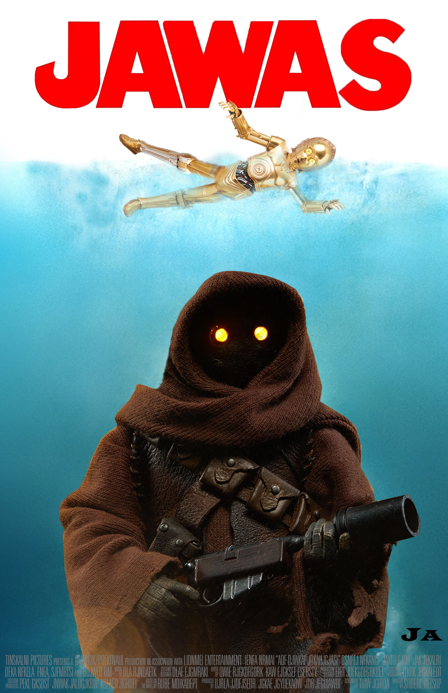
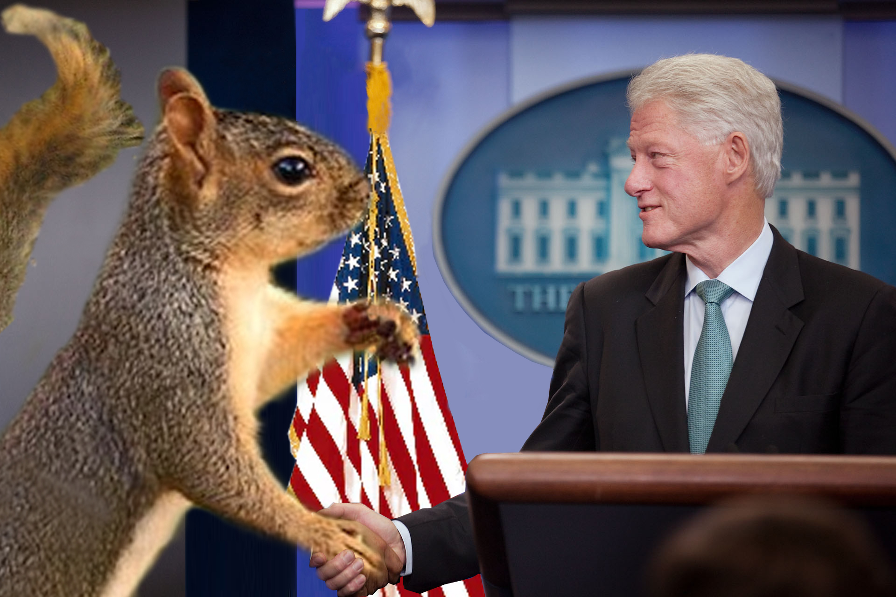
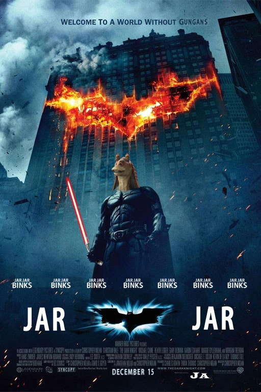
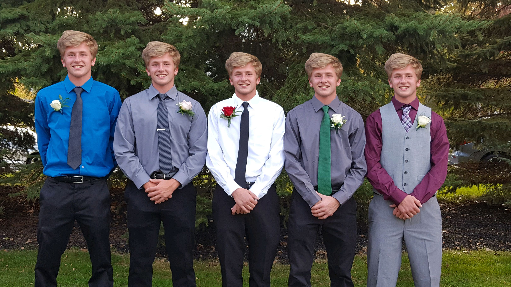

These projects vary widely in subject and professionalism. Most of them are just fun things I've done over the years.
Twinsburg Schools Today: Summer Edition
Working with the Twinsburg City School District and Classic Teleproductions, I hosted and produced three videos showcasing the School District's five schools.
2017:
2018:
2019:
Photoshop Projects
Some pictures I have edited.




Bird Essay
Perhaps my most cherished project, my dissertation on the nonexistence of birds. Click the bird to read.